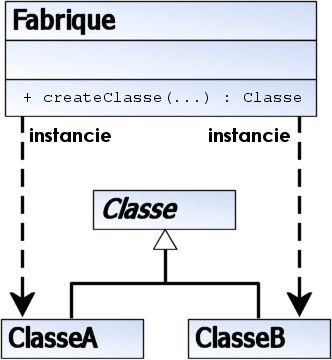

Factory
Problème
La fabrique s'adresse à la problématique de la création d'instances dérivées d'une classe.
On dispose par exemple de la hiérarchie suivante :
- Animal
- Chat hérite de Animal
- Chien hérite de Animal
Supposons que l'on charge un fichier contenant des animaux et que l'on fasse appel à "new" en fonction du type de l'animal, on aura le morceau de code suivant :
Animal animal = null ;
if ( typeAnimal.equals("chat") ){
animal = new Chat() ;
}else if (typeAnimal.equals("chien")){
animal = new Chien() ;
}else{
throw new AnimalTypeNotFound(typeAnimal);
}
animal.setNom(nomAnimal);En cas d'ajout d'un type d'animal, on doit modifier tous les codes créant des animaux.
Solution

Appliqué à notre exemple, une AnimalFactory devient l'entité responsable de la création d'un animal en fonction de son type.
class AnimalFactory {
public Animal createAnimal(String typeAnimal) throws AnimalTypeNotFound {
if ( typeAnimal.equals("chat") ){
return new Chat() ;
}else if (typeAnimal.equals("chien")){
return new Chien() ;
}else{
throw new AnimalTypeNotFound(typeAnimal);
}
}
}Les autres codes sont insensibles à l'ajout d'un nouveau type.
Animal animal = animalFactory.createAnimal(typeAnimal) ;
animal.setNom(nomAnimal);Variantes
On trouvera de nombreuses variantes du concept de fabrique :
- La fabrique statique
Animal.createByType("chien")- Les fabriques basées sur des prototypes (composition de pattern)
class AnimalFactory throws AnimalTypeNotFound {
private Map<String, Animal> prototypes = new HashMap<>();
public Animal createAnimal(String typeAnimal){
Animal prototype = prototypes.get(typeName);
if ( prototype == null ){
throw new AnimalTypeNotFound(typeAnimal);
}
return prototype.clone();
}
}- Les fabriques utilitaires qui ne créent pas des instances de types différents, mais avec des états initiaux différents
Exemple en Java
Les fabriques sont nombreuses dans l'API java et dans les bibliothèques.
Création de géométrie de différents types (Point, LineString, Polygon, etc.)
C'est une variante sous forme d'une fabrique statique
Connection connection = DriverManager.getConnection("jdbc:postgresql:mabase")Lien(s) utile(s)
https://fr.wikibooks.org/wiki/Patrons_de_conception/Fabrique